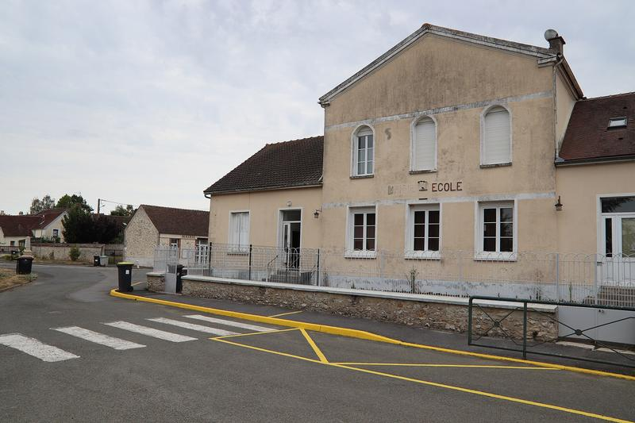
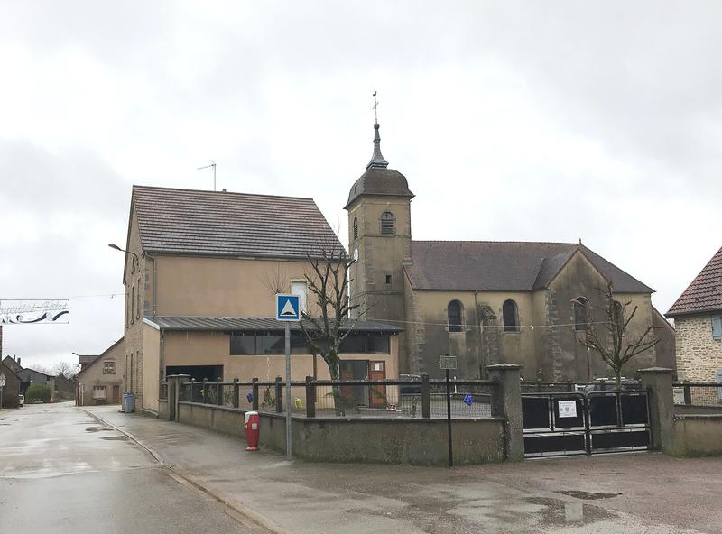
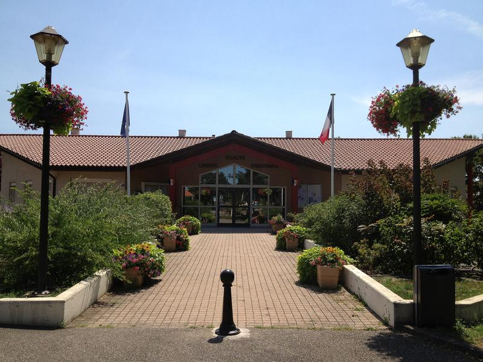
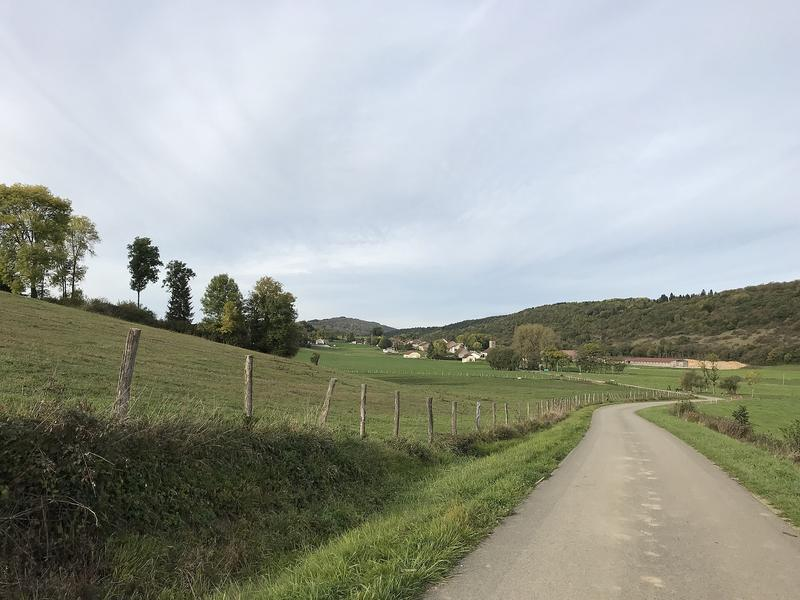

22 septembre 2026
Rénovation de l’école : les travaux commencent le 6 octobre
Les classes restent ouvertes pendant le chantier. Le calendrier et l’accès à la cantine.
Un village du Revermont entre vignes et forêts. 1 240 habitants, une école, un marché le samedi.
Faire une démarcheLes demandes les plus fréquentes à la mairie, en un geste.
Ouverte aujourd’hui jusqu’à 17 h
Lundi, mardi, jeudi, vendredi : 9 h – 12 h, 14 h – 17 h. Mercredi : 9 h – 12 h.
1 place de la Mairie
00000 Saint-Exupéry-les-Bains

Les classes restent ouvertes pendant le chantier. Le calendrier et l’accès à la cantine.


Merci aux bénévoles du comité des fêtes.

Salle des fêtes, 12 h
Place de l’Église, 8 h – 13 h
Mairie, 20 h 30, séance publique
Coteau des Chaumes, 9 h
Coupure d’eau, route fermée, vigilance météo : la mairie vous prévient directement.